Bulwark Conflagration
The burning wall
Highest defense in the game, and the fire never stops. Spread ignite across a whole pack, hold the line, then detonate every burn at once with Conflagrate.
Above the desecrated throne of Gremland, the sky perforated as ten tails of brilliant radiance crashed down from the heavens, shattering the partitions between the primordial fields. Distinct bodies, and concepts became one. Power is there for those willing to grasp it, but until then, the lands are left without clarity, without reason, without mercy. These are…
A 2D isometric dark fantasy MMORPG
The Lands Without is a classic isometric MMORPG of deep forests, old ruins, and open war. Your journey begins in Oakvale, a frontier where weird monsters roam, bosses hold their ground, and the treasure is worth the danger.
Combat is fast-paced from the start. A single even fight will test you. Multiple enemies can be fatal. Survive, and you recover in seconds, ready to push deeper.
Time passes whether you are ready or not. The world runs on a full day and night cycle, and some hunts only begin at dusk.
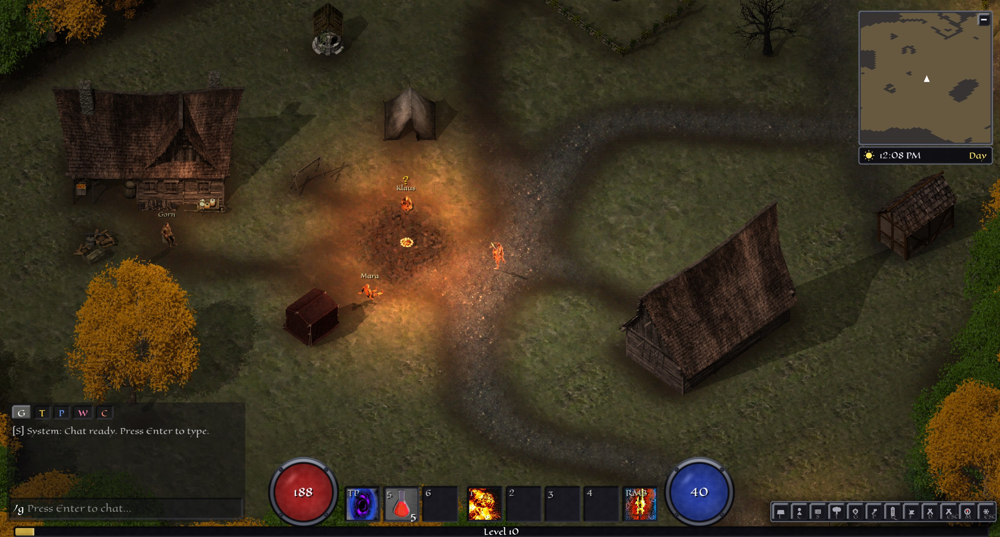
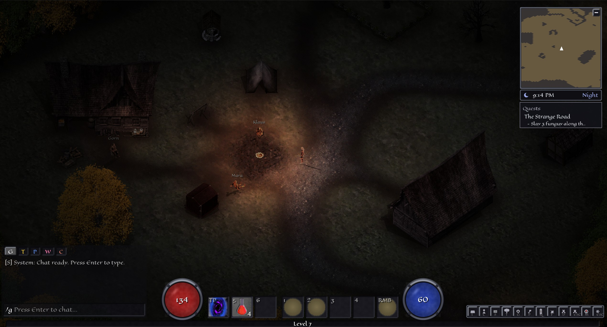
Every character grows along a chosen path, each with its own skill tree, capstone, and way of ending a fight.
The burning wall
Highest defense in the game, and the fire never stops. Spread ignite across a whole pack, hold the line, then detonate every burn at once with Conflagrate.
The detonation
Seed the field with resonant orbs, then set them all off in a single burst that tears open a Void Rift. The hardest-hitting area damage of any path.
The executioner
Stack Rend on a single target, bleed it white, and finish with Killshot. Nothing kills one thing faster than a Shade who has done the setup.
Strip away the open world and the war, and The Lands Without is a proper action RPG underneath with meaningful stats, and variable item rolls.
Every character is built on four attributes, Strength, Dexterity, Intelligence, and Vitality, feeding a full sheet of combat stats: health, mana, minimum and maximum damage, attack speed, critical chance, critical damage, armor, and block.
Resistances are deep. Fire, cold, lightning, and void sit alongside physical mitigation split into slashing, crushing, and piercing. It is impossible to mitigate everything, so choose wisely!
Skills rank up along your chosen path, and their tooltips show exact numbers.
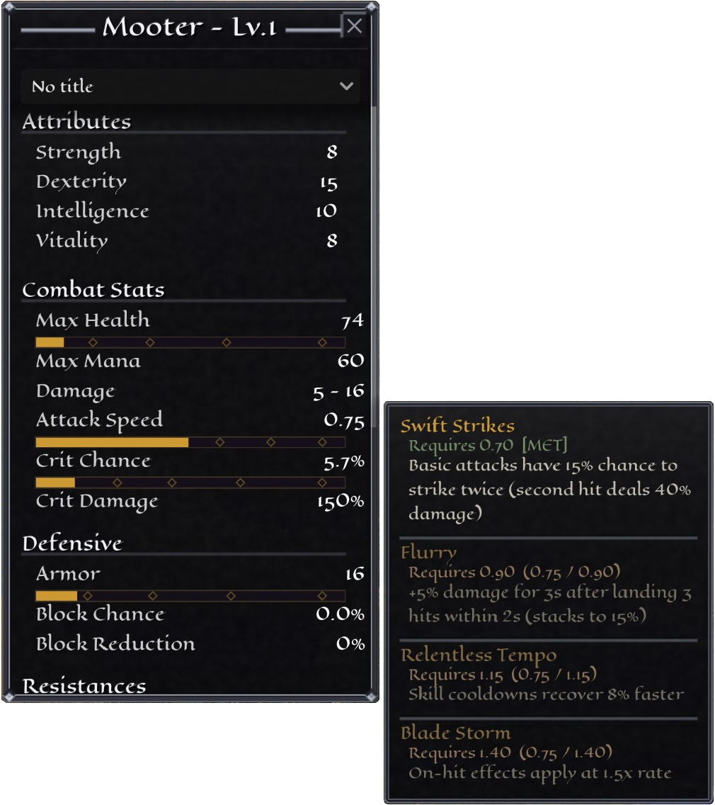

The bag is a 40 slot grid. Equipment lives in eight slots: head, chest, main hand, off hand, gloves, boots, and two rings. Materials stack to 999, and scrip, the currency of TLW, takes no space at all.
Every tooltip leads with the item's rarity color, its damage type, and its rolls.
Beyond the wilds, armies fight for territory. Castles anchor the map: hold one and you hold the land around it, and the vendors inside it.
The first war is already burning. At Thornfell Outpost in northern Oakvale, the Order of the Sunken Flame lays siege to the Cervine Host, stag-horned soldiers holding the walls against the inquisitors sent to burn them out. Banner officers from both sides recruit before every battle. Sign with Legate or Captain Veyric, and fight for pay.
Every siege has a twelve minute muster while both armies stage at their rally banners, players choose their side, followed by a twenty minute assault. Attackers have to bring down the main gate, or try for one of the vulnerable sections of wall. Then push through and hold the capture ring for sixty uncontested seconds. Defenders win by keeping them off it until the clock runs out. When the battle resolves, if the attackers stand victorious, the castle changes hands.
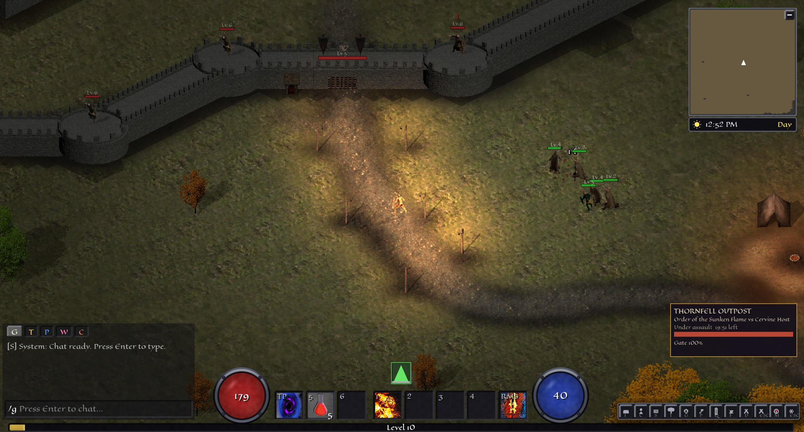
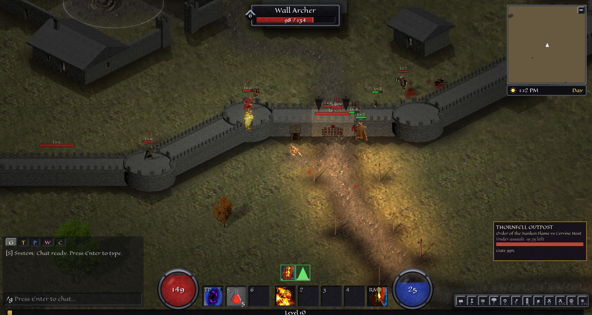
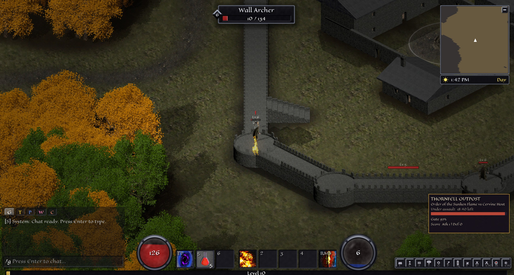
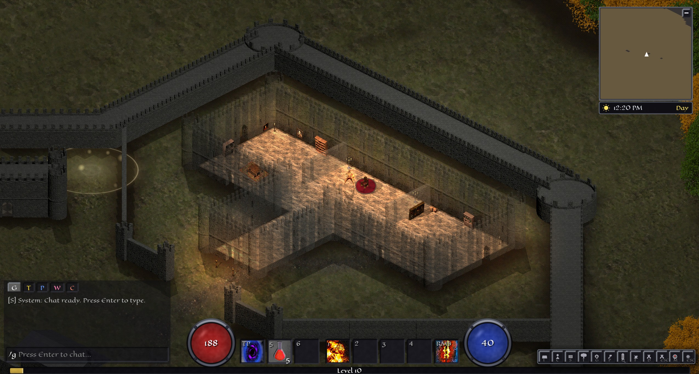
Gear in The Lands Without is not a treadmill. Base items stay viable from the first hour to the last. A short sword found at level one, rolled with the right affixes or reforged at the smith, can still compete at the end of the road.
Power comes from what rolls on top. Quality prefixes set the ceiling, themed suffixes decide the character of the item, and uniques carry fixed identities with mechanics all their own.
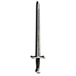
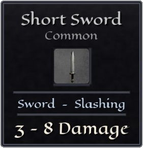
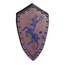
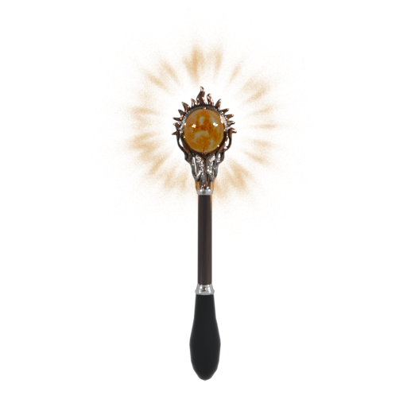
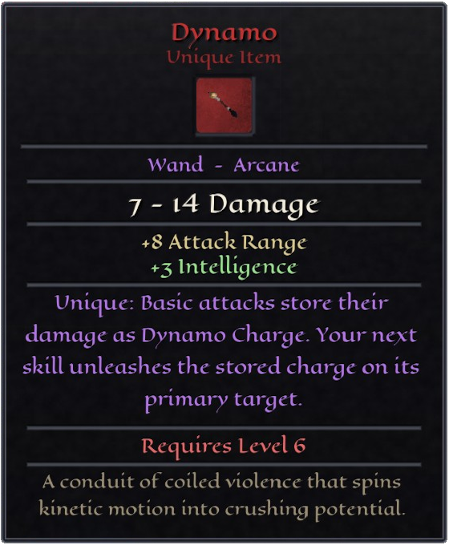
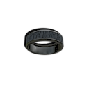
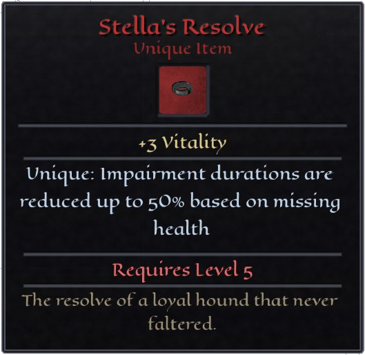
Hover an item to inspect its stats.
What the world does not drop, you can make. Gather materials, smith them into gear whose stat ranges sharpen as your skill grows, and craft tradeable enchant scrolls that push good items into great ones.
The Lands Without is being built in the open. Development updates, playtest announcements, and first looks at new regions will be posted here and in the community.
Community links are being set up and will go live shortly.